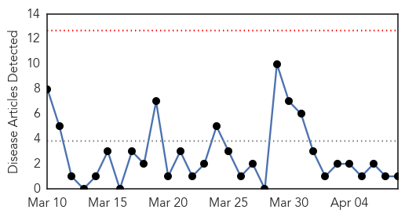
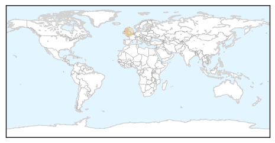
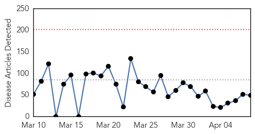
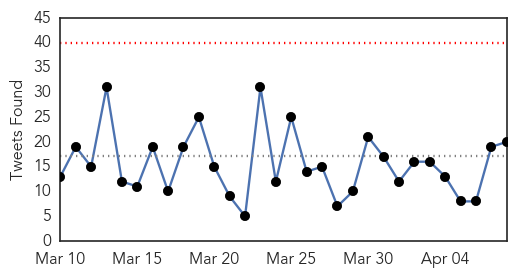
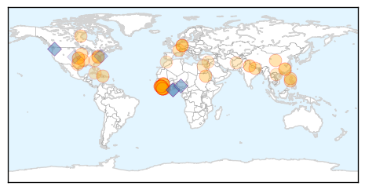
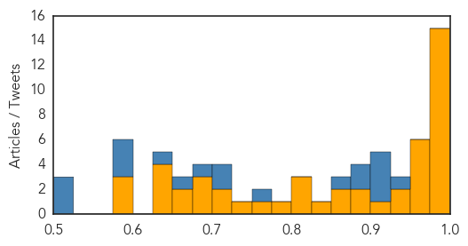

Meningitis
30-Day Web Trend
0 alerts, 0 warnings

30-Day Twitter Trend
0 alerts, 0 warnings

Article Locations
Article Confidences

Top Articles:
Top Tweets:
-
No tweets found for Apr 08, 2015
Ebola
30-Day Web Trend
0 alerts, 0 warnings

30-Day Twitter Trend
0 alerts, 0 warnings

Article Locations
Article Confidences
Top Articles:
- 1.000
- Ebola has ravaged West Africa
- 1.000
- Profectus BioSciences' Ebola Vaccine Shown Effective and Safe in Providing Rapid Single-Dose Protection Against Current "Makona" Ebola Outbreak Strain in Non-Human Primates - News Press Release
- 1.000
- Ebola Was In Liberia In 1982, A U.S. Based CIDRAP Study Suggests
- 1.000
- Ebola region sees sharp drop in new confirmed cases
- 1.000
- Ebola Vaccine Is First Tested Against the West African Outbreak Virus
- 1.000
- Obama briefed on receding Ebola epidemic
- 1.000
- UN envoy: Expect Ebola vaccine in coming months
- 0.999
- 30 new Ebola cases, lowest weekly figure in nearly a year - WHO
- 0.997
- Liberia names new health minister as it seeks to beat Ebola
- 0.996
- Let's Care for Ebola Orphans As Much As Bentley
- 0.995
- Guinea may provide answers on Ebola vaccine
- 0.994
- Ebola: German ministers talk up economic recovery in West Africa
- 0.993
- Ebola-Hit Sierra Leone Arrests 13 at Unsafe Burial: Police
- 0.993
- Commentary: Ebola deaths of so many Sierra Leone doctors are tragic on several levels
- 0.980
- UN envoy thanks PH for P90M contribution to Ebola fund
- 0.973
- Photo of the Week: Rebooting the Public Health System in Liberia
- 0.966
- Ebola-hit Sierra Leone Arrests 13 at Unsafe Burial – Daily Times Nigerian Newspaper
- 0.962
- Kailahun Chairman Alex Bonapha was 100% Correct!
- 0.961
- German ministers visit West Africa with ‘lessons from Ebola’
- 0.960
- Orlando Bloom on Joining UNICEF's Ebola Fight: I Was Honored to Witness Their Amazing Work
- 0.955
- Pakistani UN Volunteer Wins Villagers’ Hearts In Kambia
- 0.941
- MSN Student's Battle With the Ebola Outbreak Gives Nursing a Voice
- 0.935
- New UN campaign focuses on food safety
- 0.913
- Vanderbilt Joins National Effort to Speed Ebola Therapy Testing
- 0.897
- Side effects temporarily halted Ebola vaccine safety trial
- 0.895
- Ebola response effort by U.S. in Liberia proves success when providing dignity to dead: Viewpoint
- 0.861
- Sierra Leone News : Deputy Health minister discloses plans to Re-commence general health services: Sierra Leone News
- 0.855
- Might astronauts bring back a deadly disease from Mars?
- 0.829
- Mary Broh Action ‘rude, disrespectful’
- 0.814
- South Carolina
- 0.813
- 20Mins. rapid diagnostic test for ebola suspected cases « Awoko Newspaper
- 0.808
- Iowa
- 0.783
- Karin Huster: Fairness in Ebola Treatment
- 0.771
- For Ebola patients, a way to see the faces of those helping
- 0.733
- World: Medicine for Fear: Transatlantic Leadership in Emergency Funding for Epidemics of Communicable Diseases
- 0.722
- Final group of Fort Carson engineers returns to United States from Africa
- 0.702
- Courage, tenacity , Action –Three traits that changed the tide in Sierra Leone’s Ebola fight
- 0.691
- India extends support to make SAARC nations polio-free
- 0.687
- Chemical Firm Donates 40,000 Pounds of Product to Battle...
- 0.685
- Egyptian Red Crescent hosts the region’s first IFRC-led Ebola preparedness workshop
- 0.672
- India extends support to make SAARC nations polio-free
- 0.661
- World Health Day 2015- How Safe Is Our Food?
- 0.631
- India extends support to make SAARC nations polio-free
- 0.627
- World News
- 0.627
- World News
- 0.626
- Gannan Normal University Hosts Sierra Leonean Diplomat, Students on experience sharing exercise
- 0.589
- WBTV 3 News, Weather, Sports, and Traffic for Charlotte, NC
- 0.588
- Dr. Martin Salia Battling Between Life and Death at the Hastings Holding Centre
- 0.578
- KUNA : Obama meets advisers to discuss ways to end Ebola epidemic in W. Africa
Top Tweets:
- 0.980
- 10 Lessons from the Ebola Outbreak - CounterPunch http://t.co/hfH1DDZICq ebola EVD
- 0.974
- RT: UN envoy: Expect Ebola vaccine in coming months: As the Ebola outbreak in West Africa winds dow... http://t.co/wyQoXTY32S Eb…
- 0.930
- .@WHO: Of 55 districts in Guinea, Liberia, and Sierra Leone that have reported cases of Ebola, 35 have not reported a case for over 6 weeks
- 0.921
- Liberian Ministry of Health trains staff before full resumption of medical services ebola https://t.co/GdfNA9H76c
- 0.918
- RT: Cette jeune fille a reçu un matelas d'@UNDPSierraLeone après avoir perdu ses proches & ts ses biens à cause d'Ebola http://t.c…
- 0.918
- .@WHO Ebola Situation Report marks 21 new cases in Guinea, 9 in Sierra Leone, and 0 in Liberia in the last week. TackleEbola ZeroCases
- 0.911
- Liberia names new health minister as it seeks to beat Ebola - Reuters UK http://t.co/lq9ysq4PW6 ebola EVD
- 0.908
- German ministers visit West Africa with 'lessons from Ebola' - EurActiv http://t.co/wuU4AwF9SG ebola EVD
- 0.907
- Researchers develop Ebola vaccine effective in a single dose - Medical Xpress http://t.co/dzTtnjuGgV ebola EVD
- 0.889
- Ebola Update: 25,516 confirmed, probable and suspected cases reported in 3 most affected countries, with 10,573 deaths. EbolaResponse
- 0.884
- A4. Ebola showed need for stronger, sustainable surveillance & disease detection, response, & prevention capacity worldwide. NPHWchat
- 0.878
- 30 new Ebola cases, lowest weekly figure in nearly a year: WHO - Reuters http://t.co/89kjubWpiC ebola EVD
- 0.848
- Ebola Update: 25,516 confirmed, probable and suspected cases reported in the 3 most affected countries, with 10,573 deaths. EbolaResponse
- 0.835
- Derivatn and Internal Validatn of Ebola Prediction Score for Risk Strat of Patients With Suspected Ebola http://t.co/eyqHmayeNE
- 0.828
- April 8 news pouch on avianflu avianinfluenza Ebola EbolaResponse MERS vaccine is here: http://t.co/nQeRotF03Q
- 0.804
- 10 Lessons from the Ebola Outbreak lessonslearned http://t.co/pHqpHgoC5f
- 0.798
- RT: ICYMI Traces of Ebola virus were found in West Africa back in 80's. No publichealth memory. http://t.co/C1d8c5oNVR via…
- 0.788
- 2 New Ebola Vaccines Pass Important Early Test, Researchers Say - New York Times http://t.co/mwNjSa2y74 ebola EVD
- 0.788
- 2 New Ebola Vaccines Pass Important Early Test, Researchers Say - New York Times http://t.co/SR2GqmMKBU ebola EVD
- 0.777
- Orlando Bloom on Joining UNICEF's Ebola Fight: "I Was Honored to Witness ... - E! Online http://t.co/PMHoIlNlTo ebola EVD
- 0.750
- Free access to OUP resources for Ebola World Health Emergency” openaccess http://t.co/0akvQjwzxB
- 0.669
- Public Knowledge, Perception and Source of Information on Ebola Virus Disease – Lagos, Nigeria; September, 2014 http://t.co/vNFOeyasij
- 0.637
- Charlotte's Writebols talk about Ebola - Charlotte Observer http://t.co/tx6DdxbWIj ebola EVD
- 0.609
- Ebola-hit Sierra Leone arrests 13 at unsafe burial:... http://t.co/jAobbQaBEV
- 0.601
- Ebola survivor Nancy Writebol, husband speak in Charlotte - Charlotte Observer http://t.co/4ui19O5PJK ebola EVD
- 0.599
- Vaccine Efficacy Trials During Ongoing Epidemics: Lessons from Ebola http://t.co/SdY9fWACWX
- 0.570
- 1982 study suggested Ebola was in Liberia then http://t.co/Jvrhg2l7oN
- 0.544
- Ebola: German ministers talk up economic recovery in West Africa:... http://t.co/MC72VEqY9B